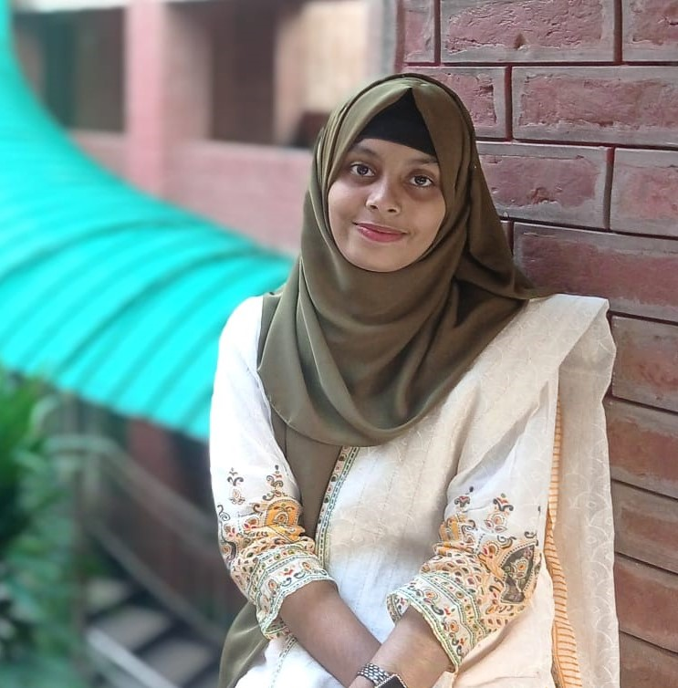
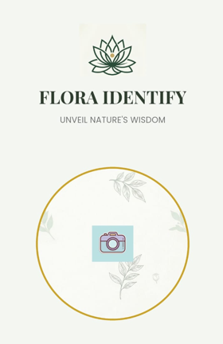
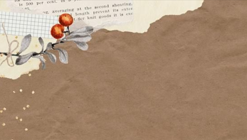

👋 Hello, I'm
Aspiring AI/ML Engineer & Research Enthusiast
Computer Science graduate passionate about machine learning, deep learning, and building AI-powered applications. I enjoy taking ideas from research to working products, from on-device image classification to sensor-based intelligent systems, and I'm eager to apply my skills to solve real-world problems.
View ResumeI'm a Computer Science graduate who is building my path in artificial intelligence and machine learning. I'm especially interested in deep learning, computer vision, and intelligent systems that solve practical problems.
I learn best by building. So far, I've developed an offline flower identification app using MobileNetV2 and TensorFlow Lite, and designed a multi-sensor rehabilitation wristband framework that I've submitted as a research paper. I'm still growing, and I'm looking for opportunities where I can learn from experienced teams and contribute as I go.
Completed B.Sc. in Computer Science and Engineering at Jahangirnagar University with CGPA of 3.66/4.00.
I build projects that solve real-world problems. Each project reflects my passion for combining cutting-edge AI/ML research with full-stack development to create meaningful and impactful solutions.

An AI-powered Android application that identifies 26 flower classes using an on-device TensorFlow Lite model.
A student-powered e-commerce platform dedicated to the creative and entrepreneurial minds of Jahangirnagar University.

An intelligent Android application that leverages AI to provide personalized career guidance for Computer Science and Engineering students.
I am drawn to research because it lets me turn curiosity into evidence. I enjoy working with data, machine learning, and embedded systems to understand real-world problems and testing ideas carefully before claiming they work. I believe good research is honest about its limitations, and that is the approach I try to follow in my work.
Designed a wearable wristband that combines an IMU, surface EMG, flex sensor, and PPG heart-rate sensor on an ESP32 to monitor home-based wrist rehabilitation. Built an interpretable Readiness Score with a dual-condition alert mechanism, and evaluated it through a controlled synthetic simulation of five rehabilitation scenarios (1,000 sessions, 301,000 observations).